(日記とか言うモノ)
アストロシティ日本語版ついに来た！
あまりヒーローコミックは読まないぼくだけど、これはいろいろ評判を聞いて気になっていた一冊。
・・・ジャイブのサイト見たら「都合により延期」とか書いてあった。え～。
まあいいや、JLAの方を買おう。本編より「JLA：シークレット・オリジンズ」目当てなんですが。
ハーレイ＆アイビーまだ～？
カートゥーン横丁さんの日記で見かけた話＞■
＞48.6%の母親が『パワーパフ ガールズ』をヒアリング能力が高まるなどとして
＞「英語教育に役立つ番組」として評価しました。
（めんどくさいんで、同じ引用）
うん、確かに英語で聞き続けていればヒアリング能力は高まると思う。理解がおいつくかは別として、頭が固くなったおにいさんでもそうだもの。
「チイサイバニーバニーノカワイイボウケンモノガタリ！」
「ニホンノロボットニナッチャッタータイヘンダー！」
ほら！聞き取れたっ！＜ソレは違います。
しかしまあ、カートゥーンで英語を覚えるとよろしくない場合もございます。
パワーパフガールズで英語学習！！＞かわいらしいオヤジギャグ？
orz...やばいよ、わしけっこうカートゥーンで英語覚えた部分多いよ・・・
そうでなくとも、カートゥーンとかって「若者言葉」かつ「漫画言葉」だから、うっかりビジネスとかに使ったりしたらド恥ずかしいことになりそうだ。
逆に考えてみるとよくわかる。アニメで日本語を覚えたとかいう外人が商談の時に
「オッス！オラ、ケントだ！よろしくにょ。はにゃーん。いけてる、みたいな。やってやるぜ！」
とか言ったら引くな。
注：海外ファンサイトフォーラムで英語を覚えるのも危険です。
そんなことよりこれですよ。
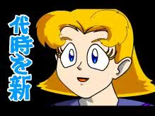 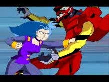
これは「Kappa Mikey」という作品。まだここでつっこんではいけません。
この作品が、そのうち（海外）ニコロデオンで放送されるというのですよ！
どぎゃーん。
詳しくはこちら＞■
最初、そちらの記事を読んだときはMegas XLRのことかと思った。でも、トレーラーを見たらもっと酷かった。同人アニメ？酷い酷すぎる、十万石まんじゅう。
ニックでもうじき「降世神通
The Avatar」が始まって、toonami化するかと思ったら、一気にadultswim化ですよ。スペースゴーストも真っ青。
Drawn
Togetherがちゃんと考えて作ってる作品にみえてくる。はるかに著作権を考慮している。
Ninja
High Schoolのほうがまだマシかもしれない。
やっぱ最近の海外アニメ事情っておっもしろいな～。（作品がおもしろいかは別として）
ギターウルフのアニメも楽しみです。
間違えた。好みのロボデザインは、XJ5じゃなくてXJ6のほう。でもXJ5の性格は好き。
開店休業研究所・ブログ研の8話感想を読んで気が付いたけど、8aの悪役ってマリオ・ブラザーズなのね(笑)
一応兄弟姉妹話ってつながりになってるわけだ。「はまり道」を読んで以来、マリオ兄弟は仲悪そうにしか思えない。
8話ではジェニー後継機XJ10のネタはジョークだったけど、アメリカで年末にやったクリスマススペシャルではどうも笑い話ですみそうもない感じだ。普通に楽しいのに、妙にハラハラしていまうのは、やっぱりロボットものだからだろうか。キャラとして感情移入する以外に、人によっては別な側面から変な感情移入感情がわきあがってしまう気がするのですよ。（うまくいえなかったので、変な日本語に・・・）
だから、物語がハッピーエンドに終わると、ほんと嬉しくなる。
ええと、あれだ、キカイダーを見てるような感じっていうか。ま、まさかそのうち兄弟（姉妹）殺しも！（原作版キカイダー参照のこと）
そもそもジェニーさんには「ロボット三原則」なんて古くさいロジックは組み込まれてないようだし。あーもう、たかがカートゥーンでそこまで考えてないだろうってのに、勝手にあれこれ考えてしまうよ。
やっぱりロボットだから？マシンだから？ダダッダ！（ジェニーさんは涙は流しますけどね）
ロボ少女なんて日本でいっぱいありそうなんだけど、「主役で」となるとあまり思いつかないのはなんでだ？私が知らないだけなのか？えーと・・・リミットちゃんと・・・アラレちゃん？
日本って意外に等身大ロボって発展してないのかも。いや、ワキならいっぱいいるけどさ・・・
あと日本の少女ロボって容姿が人間と同じレプリカントタイプばかりって気も。
とりあえず今後のエピで気になるやつ。
「Daydream Believer」幻覚ジェニーさんでさらにアヘアヘ。
「Tradeshow Showdown」世界ロボット会議とかやるものだから、また世界観妄想が暴走しそう
「The Wonderful World of Wizzly」ディ○ニーネタってのもあるけど・・・
まあ、ぶっちゃけ全部気になるといえば気になるんですが。
※これ書いてアップしたあと、速攻で日本ロボ少女についてメールが来た。
主役級日本ロボ少女 「鋼鉄天使くるみ」「セイバー・マリオネット」「ちょびっつ」とかいっぱいありますYO！PS.マルチも自分の中では主役です。だそうです。すんません。でも正直人間とかわらなすぎてロボっぽくなくて思いつかなかった。
日本は「見た目ふつうの少女、でも中身はロボ」というパターンが好きなようだ。むしろロボより人形が好きな国なんだろうか？よくわかりません。
今日のジェニーさん。
08a「大変！ 妹たちが押し寄せてくる～！の巻(Sibling Tsunami)」
突然8人の妹ができちゃった！って書くとどこぞの萌えアニメのようだ(笑)
でも、実際そーいう話なんだから仕方がない。
ウェイクマン博士に「失敗作！」とか言われちゃってるかわいそうな試作品XJナンバーズだけども、なかなかかわいいのよこれが。特にXJ3 ! こいつなんの特技もないの。しかもしゃべれないうえにすぐ壊れる。
でも、そこがいい～～ん。
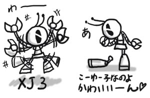
デザイン的にはXJ5が好きかなあ。
一応試作品ということを考えて、XJ9ジェニーに至るまでのウェイクマン博士の実験過程を考えてみよう。
XJ1：電子頭脳の試作
XJ2：自立可動型への試作（まだ人型じゃない）
XJ3：人型ロボットの試作
XJ4：万能型への模索か？（また人型からはなれる）
XJ5：コミュニケーション機能試作。頭部しかない
XJ6：再び人型への試作。バランス的にはXJ9に近いが、まだアンバランス。
XJ7：それらを統合して・・・と思ったが、うまくいかなかったパターンのようだ。二足歩行機構は難しいらしい
XJ8：ほぼ完成形。だが、重量やエネルギー効率に難がありそうだ。あと電子頭脳も。
そしてわれらがXJ9の完成ですよ！やったー。
妹ロボット達にはジェニーのように人間らしい名前はないけど、XJ8は「ジャイ子」だな。（自分的に）
パワパフみたいにきっとみんな「J」から始まる名前にするに違いないから。
姉妹が合体したとことは、まるで一枚のステンドグラスのようで美しい。最後に合体するジェニーさんがなんともかわいいのよ。とても楽しい話なんだけど、見ている方が勝手に「あの子達どうなるんだろう」とか考えてしまう。ティーン☆ロボットは演出やらなにやらでは、そんな雰囲気などみじんもないのに、こっち側で勝手に哀愁とかを感じてしまう不思議なアニメだ。
08a「どうしよう、あたしドロップアウト？の巻（I Was a Preschool Dropout）」
ミンキーモモの歌を歌って登場するブラッド。わけわからん。といっても、創作なんだろうか？知らん曲だ。
年代推定はわからないけど、とりあえず未来であることは間違いないようだ。さりげに「アルファ星着陸」とか言ってるし、宇宙時代でもあるんだねえ。
それより ジェニーさん、作られたのは5年前だから5歳！？ってことで幼稚園に入れられるんですが、むしろ5年も前に作れてていたのかというのが驚き。もっとつい最近かと思っていた。何年も家に監禁されてたってことなんだろうか？自分としては、ボディそのものが作られたのが5年前で、電子頭脳の自我が目覚めたのがつい最近と思うことにする。
幼稚園児にボールぶつけられたりしていじめられるジェニーですが、このシーン、英語だとちょっぴり重い雰囲気なのに、日本語版だと声優さんがいちいち「アタッ」とか言うものだから、なぜか笑いポイントに(笑)
ロボダンスのシーンでは、やっぱり英語のほうがノリがいい。音楽にのせたものを吹き替えるのって難しいんだよねえ。パワパフの新作「See Me, Feel Me, Gnomey」が今年放送されなかったのもそのためだろうか？（この話はロックオペラになっていて、本来「キスはもうダメ」の次に放送されるはずのものだった）
それはともかく、ブチキレジェニーさんｷﾀ━━━━━━(ﾟ∀ﾟ)━━━━━━ !!!!
幼稚園死屍累々地獄絵図
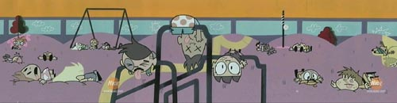
パワパフの「みんな大好き!」に匹敵する暴走話。しかもこちらは相手が幼稚園児！
あーーーー楽しい。やっぱこうでなくては。今のパワパフが無くしてしまったものが、ここにはある！
ところで、今回の邦題はどちらも原題をかなり意識してるものになってますね。それまではどっちかっていうと内容からの意訳みたいな題だったのに。
「大変！ 妹たちが押し寄せてくる～！の巻」は原題「Sibling Tsunami」すなわち「妹津波」だし、
「どうしよう、あたしドロップアウト？の巻」は原題「I Was a Preschool Dropout] のドロップアウトをそのまま使っている。
だから逆に、「押し寄せてくる？」「ドロップアウト？」とか、原題を知らないで日本語だけで試聴してるとよくわからない題になってしまっている。うーん、翻訳って難しいねえ。
月末になるにつれどんどん重くなってゆく日記ですんません。
タコソースとタコチップスを買ってきて食べてます。カートゥーンを見てると食べたくなるんだよねえ。タコソースはマイルドってやつ買ったら全然辛くないので、とりあえずお店にあった一番辛そうなエクストラホットっての追加購入。うん、自分にはこれがちょうどいい。
ワーナーマイカルのシネコン内ではこの手のお店があるらしいけど、もっと日本でもメキシカンなファーストフードができないかなぁ。本格的なヤツ。
戸帆さんの 1月27日の日記にあるように、ディズニーランドにぜひ「ブエノ・ナチョ」を！って感じですよ。当然「ナコ」を注文ですよ。本当に出来たら絶対行く。
カートゥーン観てて思うこと。どうもあちらでは好みの物語パターンがあるらしい。エピソードが増えるとまじってくるのがこのパターン。ちょっと思いつくのをあげてみると、
・脳味噌
・体内冒険
・タイムトラベル
なんか、あっちの人って異様に脳味噌好きだよね。古典的なカートゥーンからして、頭パカッと開けて脳味噌取り出したり、耳から手を入れて脳味噌いじったり。脳味噌モンスターも日常茶飯事。
ゴジラの中に入ったり、インベーダージムでもあった。しかもたいがい体内だというのにみんなムチャな戦闘を始める。体に対する感心が強いのだろうか。
そして、タイムトラベル。たいがい未来は悪い未来。これもゴジラでもあった。もちろんTTやパワパフ、キムポッシブルも。ビリマンの帝王マンディもそのたぐいか。で、現在ではパッとしなかった人が未来で屈強なレジスタンスリーダーとかになってるパターンも多い。ターミネーター以降からだとは思うけど、そんなにみんな好きなのか？
◇
ティーン☆ロボット、勘違いしてて、未放送分は明日からでしたね。もう、気持ちばかりあせっちゃって、ドキドキ。
今日は「ロボットなんて大嫌いだ」と「呼ばれてボッカリ」。なんど聞いてもボッカリに聞こえる・・・正しくは「ばっかり」なんだろうが・・・・これはこれで面白いので、正式なものがわかるまで、このままにしとく。
何度観てもジェニーが人スーツを脱ぎ捨ててバーン！と登場するシーンはカッコいいなあ。
しかも、その途中のチカチカするシーンはよく見るとカートゥーンらしいカットでよいなあ。
こーいう感じ
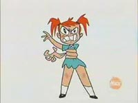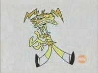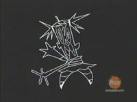
ところで、この人皮スーツカワイイ子モードのデザインって
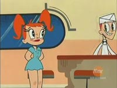
絶対Jill
Friemarkさんだと思う。キャラデザはAlex Kirwanと一緒にやってるから、全体を見た限りではどっちがどっちかはわからないんだけど、このキャラだけは雰囲気とかJill
Friemarkさんぽさがプンプンするのよ。初めて見た時からScary Miss Maryぽい感じがしてたんだよね。
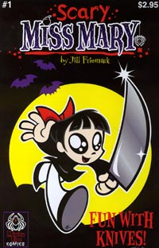
マリーちゃーん。
今日は英語で聞いていたので、この人皮スーツの声にびびっと反応。声はGrey Delisleさん。ちょっとダークな感じに喋ってるので、なんかものすごくマンディっぽくて、ハァハァ。
そーいえば、この組み合わせは今ならむしろHi Hi Puffy AmiYumiか。
乱入してくる暴走族が日本語版だとなぜか「暴走族ロボット」とか言われてるけど、もとは「spece bikers」。だから、本来は宇宙人なんでしょうな。メズマーさんのロボット嫌いを強調するためにこんな訳にしたのか、単に間違えただけなのかはよくわかりません。でも、どーみてもロボットには見えない。このへん違和感を感じた人も多いんじゃないだろうか。
「呼ばれてボッカリ」は、話的にはもうひとつって気もするけど、飛行羽根のジェニーさんがカッコ良くて好きだ。あと箒で掃いているときに内股ぎみのジェニーとか、ふーふーしてるジェニーとか。これからまた週末が楽しみすぎてたまりませんですわ。
竹熊健太郎のblogでマッケイの「リトルニモ」が公開中。＞■
確かに90年以上まえのものだから、作品自体には著作権はないだろうが、これのソースがDVDからってのはどーなんだろ？って思ってたら、あんのじょうコメントが著作権の話に。
この理屈でいくと、俺がここで「くもとチューリップ（1942）」を公開してもなんら問題はないってことなのかな？でも、確か著作者の死後何年ってことだから、ちょっと無理か。
このコメントの流れに出てくる「フェア・ユース」という概念が少し興味深い。どこまでが許される範囲なのかがよくわからんが。「引用」とは違うものっぽいけど。
スーパーマンのドラマ「Smallville」を調べていたら、こんなのみつけた。
BIRDS
OF PREY
実写ドラマ化してたんだ～。ゲストでバットマンやジョーカーも出るっぽい。でも、どうやら人気はあんましなかったようだ。
◇
W.I.T.C.H.の日本版と米国版の本が届きました。
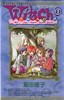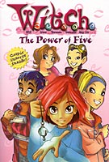
米国版・・・・コミックじゃなくて、ノヴェルだった・・・や ら れ た
ライトノヴェルみたいなことすんなよー。間違えるじゃんかー。
どーりで、アマゾンで扱ってるわけだ。でも、最初と最後だけ、ちょびっとコミック化されてるやつが載ってる。
日本版 W.I.T.C.H.は確かに漫画なんだけど、クレジットを見ると、
Manga version by Haruko Iida
Series created by Elisabatta Gnone
とあり、話ごとにScriptのクレジットも。このへんがちょっと普通のと違って変則的。
とりあえず読み比べてみると・・・同じだ！！！！
ストーリーが同じなのはわかるけど、比べてみるともっとおもしろいことがわかる。
| 日本版 | 米国版 |
| 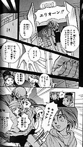 | 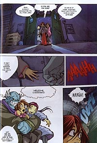 |
| 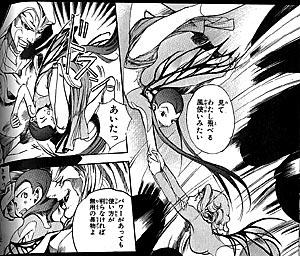 | 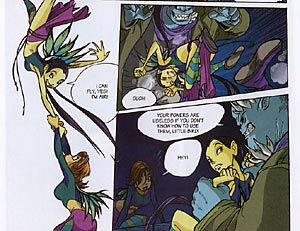 |
同じ！同じ！
漫画とコミックでコマの流れは反転しているものの、構図やポージングなどいっしょだ。
これはどういうことかと考えると・・・・
原作としてスクリプトをもらって漫画として描き上げるのではなく、コミックを直接原作に使ったということなんだろう。
ここでは、かなり近いシーンで比較したが、実際には漫画のほうがページ数に余裕があるのか、細かいところをもう少し膨らませてあったり、違う表現で描いてあったりもしている。同じシーンでも微妙に表情が違っていたりもする。単なる置き換え・書き換えではなく、それなりにまかされてもいるんだろうね。
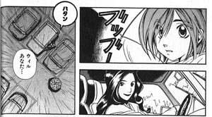
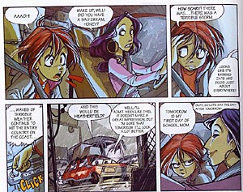
ウィルのママとか全然雰囲気違うし(笑)
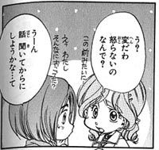
イルマなんか、ぽったり系がより強くなって、ちょい、ぷにな感じに。でも眉は太い。
話は思いの外複雑。いや、複雑ってわけじゃないんだけど、スロースタートな感じに「物語」として丁寧に進んでゆく。少しずつ、少しずつ少女たちに訪れた変化を描きつつ、敵や世界の全貌などはまだハッキリとしないままだった。いまのところ、ちらほらと物語にからんでくる人物が伏線的に出てくるだけで、その相関関係まではよくわからない。
日本の漫画として普通に読めるこのW.I.T.C.Hだが、米国版のものとまったく同じということがポイントだ。日本と外国ではコミックの文法が違うとか、超えられない壁があるだとか、ぬかしているのもたまに読むけど、もうそんなことはないんじゃないの？？？なんて思う。
設定では、タラネー（メガネの子）が「火」、アイ・リン（チャイナっぽい子）が「風」、コルネリア（金髪ロングの子）が「大地」、イルマ（茶髪のぷにな子）が「水」の属性をもち、ウィルマは無属性でそれを束ねる力を持っている。ちなみに、ウィルとコルネリアが14歳、他は13歳だ。
WINX Clubと違って、本気で思春期モノをやろうとおもっているらしく、性格表現がけっこう繊細。
それは不思議な力を得た時の彼女たちのとまどいにハッキリと現れている。
「少しずつ体が変わってゆく、そして二度と元には戻れないそんな気がする。」「自分が変なのか、まわりが変なのかよくわからなくなってきた。少し怖い」「それに、周りに見えるものも一緒に変わってきているように思える」
まさに、思春期のメタファー。
米国版はノヴェルだったけど、脚本書としてみれば、まあこれも悪くないかなとも思った。
・・・・・けど、やっぱ英語ばっかりは読む気がおきね～～！！そんなに難しくない英語なのはわかるけど、モチベーションが・・・
サムライジャック ｷﾀ━━━━━━(ﾟ∀ﾟ)━━━━━━ !!!!
新エピ4月5日から！！！やっとですな～～。
よかった。文太まだ生きてるうちで・・・・
でもって、「CorpseBride」のトレーラーも、ｷﾀ━━━━━━(ﾟ∀ﾟ)━━━━━━
!!!!
なんか人形の動きが前にもましてなめらか。日本公開はいつになるんだろうか。アメリカではハロウィンの時期を狙ってるみたいだけど。
リンクをぐちゃぐちゃ足したりなんだりしてたら、ぐちゃぐちゃになった。すんません、もう自分しかようわからんかも。なんだかいつのまにかティーンタイタンズサイトも増えたんだなあ。
「最速八倍値。」覗いたら笑い死にそうになって、マジ参った。スレイドさんの尻に惚れたわっ。
さらに久々にDA潜ったら、あっと言う間に時間が吸い取られた。やべえよ、ここ。
でもって明日が終われば、いよいよジェニーさんの新エピ。もう頭の中ぐるぐる。
なわけで、今日はネットうろうろしてるだけで一日が終わった・・・
しったかアメコミ知識をひけらかしては、あちこち恥かいてますが、それで本当のことがわかれば得だよなあ、なんて思う、今日この頃。でもやっぱりハズカチイから自爆。ぽちっとな。
BBSでBoxmanさんが言ってましたが、これから世界のアーチストがアメコミに・・・ではなく、とっくにみなさん参戦していた様子。むしろ独自市場があった日本が出遅れていたという感じにも。
DAにもフィリピンの人けっこういるよなあ・・と前から思っていたのですが、それなりに下地はあったのですね。
PowerPack！(アメコミ)の巻
PowerPack！についてごグリヒルさん自身の日記でもエントリされてました。新作じゃなくて、けっこう前の原作なんですな。昔のPowerPackもけっこうかわいいな。なんとなくミスターインクレディブルを思い出す。ていうか、どっちかっていうとチーム・ゴー？（by
キムポッシブル）
4回シリーズだし、多分TPB化されない予感もするので、買っとこうかな？
（でも、このあいだ海外通販があっさり成功したので、いよいよマイルハイにでも手だそうとか思い始めてる自分）
思い出し日記
1月22日のオフのことです。ビデオデッキもあるしで、みなでカートゥーンとか見てたんですわいな。太陽戦士サンライダーズとか（笑）
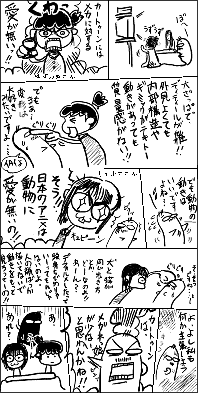
どーーーーーーーーーーん。
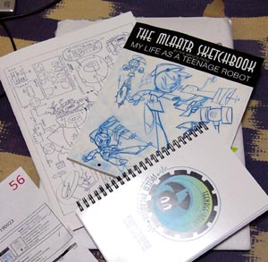
The MLAATR Sketchbookが届いたっ！！（あんど、カレンダーとノート）
スケッチがいっぱいあって楽しい。見たことないキャラとかいっぱいあるけど、そのうち見れるのだろうか。多分第一シーズン分だとは思うし。ナースロボとか、ギリシャ風ジェニーとか、ビーナスジェニー（？）とかいっぱい。資料的にはいい感じ。関わったアーチストがいっぱいクレジットされてるのもいいなあ。
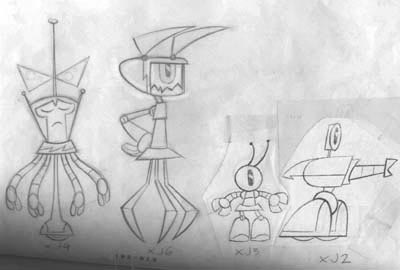
試作機XJナンバーズ。ま、もうじき見れるんだけどね。
アメリカではようやっと第二シーズン。多くのカートゥーンで第一シーズンが貯まるまで時間がかかるのは、反響などの様子見？それとも慣れない初回シーズンは設定の立ち上げとかに時間がかかるからだろうか。その分、第二以降になると制作テンポがアップするのだけど・・・日本に来るのはあと一年はかかるかなあ。（まあ、第一シーズン分しかないのに放送してくれた日本ニックには感謝しますけど）
そういや、昨日発見した濱野 雅嗣さんのプロフィールをよく見てみると、「ジェーンはティーン☆ロボット」って書いてあった・・・・今すぐ間違い直せコラ～！
◇
日本人アメコミアーチスト極太の日記をさらにさかのぼって読んでみたら、いろいろアメコミの制作事情とか書いてあってなかなかすばらしい。こーいうの、こーいうの知りたかったのボク。
専属作家になるとギャラが上がるだとか、原稿を他で出版してはいけないけど、生原稿売るのは問題なかったりとか、原稿用紙がでかいとか（A3変形）、しかも裁断がテキトーだとか。おもしれえ！！
そーいえば、ちょっと思い出した話。
スーパーリアリズム（まるで写真のようなリアルな絵）って技法がイラストの世界ではあるわけですが、これが発表されて世界で話題になった時、日本のイラストレーター達が「おおお！」と感動したわけですよ。
で、「俺たちもやろう！」と燃えたはいいが、手法がわからない。とりあえず、作品が載ってるカタログとかを丹念に検証したりして試行錯誤のすえマスターしたんですよ。その後、彼らも念願かなって、本場のアーチストに会うう機会ができて、制作現場を見ることができたのです。そして彼らは驚いたのでした。
巨大なキャンバスにどががががっと描いてる！！
カタログに載っていたのは当然ながら縮小されたものだったのですね。ところが、日本の彼らは、そのカタログに載っているイラストが「原寸」なものだと思いこんでいたので、ものすごいちっちゃいキャンバスにものすごい細密なイラストを描き上げるという本場の「スーパーリアリズム」とは全然違った日本式「スーパーリアリズム」を完成させていたのであった～！
いやあ、こういう話って好き。
ティーンタイタンズが日本アニメの表面的な技法とかを取り入れているものだから、漫符の使い方とか演出がちょっとヘン、なんてよく言われるけど、これこそが文化の伝搬というものですよ。歴史的に文化っつーものはそうして発展してきたんですから。「魂」なんていらんのですよ。「形」だけの模倣こそが、新しい文化を創るのです。えらい人にはそれがわからんのですよ。
ところで、ねこみそさんとこで紹介されていた「Power
Pack」という作品、アーチストがグリヒルさんですね。＃１を書くトコ見ると、もしかしてこのシリーズのメインアーチストになってたりするんでしょうか？すげえ。大リーグみたいに、これからアメコミで活躍する日本人どんどん増えてくるのかな。と、いうか、自分の予想としては日本人だけでなくフィリピンだとかシンガポールだとかオーストラリアだとか、世界中のコミックアーチストが参戦してくるような気がします。（韓国・香港系はかなり前から描いていたようだけど）
今はネットもあるし、漫画家に編集者がべったりと付く日本式と違って、どっかドライで、かつ月刊スパンのアメコミ式のやり方はこういうのにはうまく機能しそう。
まー、でもカラリストの問題はなんとかならんかな～。個人じゃなく、スタジオで受けてカラーまで仕上げるシステムになればいーのかしらん。
ティーン☆ロボットの声優さん情報。
ドン・プリマ役は「濱野 雅嗣」という方のようです。＞■
肝心のレギュラー系がさっぱり確定しないというのに、ワキのほうだけ情報が確定してゆくってのはいかがなものか。ジェニー役と噂される「佐々木 亜紀」さんも同じ事務所だってのに、こっちは記述無し。やっぱ違うのかなあ？
豆魚雷はコミックというよりトイショップという感じだったのですが、アメコミクラブというものでプレビューズと連動してアメコミの注文もwebで本格的に稼働したみたいですね。大宮・浦和方面の人は都内のアメコミショップを利用するよか便利かも。（ただ、ブリスターは新刊の立ち読みが出来るのがいいとこなんで、自分はやっぱりブリスター使うかと思いますが）
アメコミといえば、アメコミ作家でもある「榊原瑞紀」さんのサイトをみつけた。＞極太
マーブルの「EXILES」のメインアーチストです。すげー。もしかしたら自分が思っているよりアメコミに関わっている日本人って多いのかもしれない。ついでにいえばカートゥーンも。カートゥーンネットワークスタジオとか数人は日本人とかいるんじゃなかろうか？
それはさておき、極太さんの日記のとこのラムちゃん・・・ではなくて、「カラリスト」の話題のとこ。
なかなか興味深かったです。アメリカの分業システムの現場ってどうなっているんだろう前から思っていたのですが、（これは一例にすぎないのかもしれないけど）その一端がみれたような気がしました。コメントまで読むとインカーの話題も出ていてなかなかおもろい。アメコミのペンシルワークってものすごく細かいとこまで描き込むのも、そういう背景があるのかと納得。
いやーぶっちゃけ、実はパワパフのコミックのカラリストもけっこう不満なんですよ。よけいなグラデとか効果とかやってるヒマあったら、塗り残しや塗り間違いなんとかシロ！とかよく思います。
あと擬音とか、効果線とかに余計な色とか入れるのもやめてほしいなあ。
（Allredのカラリストは奥さんがやってるせいか、すばらしくマッチしてて好き）
どうも、自分の作業が終わったらあとは投げっぱなしという感じが凄くするのですが、どーなんだろ。ライターとペンシラーが密接な関係にあることもあるだろうけど、基本的にはコミュケーションが断絶してるように思えるし、ライター→ペンシラー→インカー→レタラー→カラリストと流れて、それぞれ本が完成するまでなにやってるんだかわからないっぽい。
アメコミが読みにくいって話も、もともとセリフも絵の一部として描いている日本のマンガと違って、あとから隙間にフキダシやセリフを入れるからだとも思える。効果音とかも別の人（レタラー）がやるから、コミックとの統一感というか構図的によろしくない場合が多いようにも。
だから自分としてはメインストリームの作品より、一人で描いているインディーズ作家の本のほうが（手書き文字が汚かろうと）読みやすい。セリフのバランスだとか、コマの展開だとかが自然な感じがするんだよね。それが日本のマンガと文法が違っていたとしてもだ。（最近のマンガ批評は文法うんぬんに囚われすぎていると思う）
ま、それはともかく、スペースゴーズト#3ですよ。
前回で死刑執行人のようないでたちとなったゴースト。今回さっそくとばします。
自分を陥れた連中を一人ずつ追いつめてシメまくり。みんなのヒーローどころか復讐鬼モード全開。いつのまにかトレードマークのシルエットシンボルもペイントしていて、見た目はご存じのスペースゴーストなのに、やってることは怨念の塊のような蘇った死者。ごごごごご。
ついに、憎っき最後の一人を追いつめ、今まさにくびり殺そうとした瞬間・・・・どがーーーん！
空からの謎の襲撃！あれは！
ゾラック登場！！！！！！！
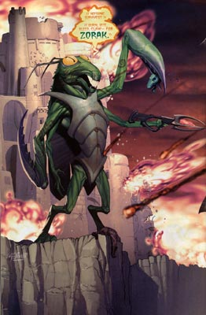
って、でかすぎ～～～！Σ(ﾟдﾟ|||)怪獣かよ・・・
（多分6～7mくらいあります。足下にころがってるのがゾラックにくびり殺された人）
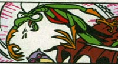
参考までに、こちらが通常のゾラック（カマギーラ）さん。うわあ、よく見たら手も増えてるし。
てなわけで、以下次号と、気になるとこで終わってます。うーん、どーなることやら。次回は凶悪宇宙人ゾラックとの死闘でしょうか。
ところで今回のスペースゴーズトではちょっと気になることが。
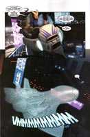
あちらではサイバー感を出すために定番となった「漢字」ですが、やっぱりこのページでも使われてます。漢字自体はウソ漢字じゃないんですよ。ちゃんとした「漢字」。でもねえ・・・これよく見てみると
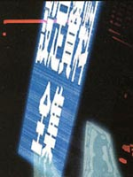
「設定資料全集」？？？？(ﾟдﾟ) ？？？？意味フメー
さらによく見てみると
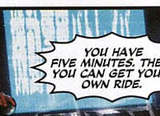
これはもしかして・・・「機動警察パトレイパー」？？？
どーも手元にあった日本語の本からなんかカッコよさげなものをテキトーにとったご様子。海外で売ってるわけのわからん日本語Tシャツなんかと同じノリ。
多分だれかこの本でも持っていたんでしょうなあ。
「なんかサイバーっぽいし、これなんかどーよ」
帰ってきた。
当初の予定とは若干内容が変わってきたような気もするオフ会だったのですが、楽しかったです。けっこう時間的には余裕があったような気がしたのに、時間がたつのはあっと言う間すぎ。
モノポリーとかして遊びました。
ゲームのコマをカートゥーンのフィギュアで代用してやるのはなかなか面白い趣向でよかったです。「勝ち」を狙ってバットマンを使おうかとも思ったけど、「カレ」を使うことに。そのせいでしょうか、何度刑務所に入ってもすぐでれたのでした。わははははは。でも優勝は高額買い物上手なあの方に奪われてしまいました。ちくしょう。あそこさえ買い占めできればっ！あともう少し時間があれば！
・・・・PCゲームでいいから、カートゥーンキャラ総出演のこういうゲームとかなんか出ないかなあ。
夜がふけるにつれて、どんどん（ちょっと別な方向に）濃くなっていって楽しかったです。
あと、海外のアダルトスイムオリジナル作品が日本でちっとも放送されないのも無理はないとしみじみ思ったりもした夜でした。
以前にお会いしたmassangeanaさんが言った言葉「SGC2Cは見てると眠くなる」
サムライ・ドジャーズは見れたのですが、ジェニーは見れなかった。今週分はいいか。
サムライ・ドジャーズを見ていたときにクレジットにゲンディの名が出たんだけど、あれはどういう役割だったのだろうか？よく見てなかったので、気になります。ダック・ドジャーズは第二シーズンになってからパロディがかなり強くなって楽しいのだけれども、終わってみると話全体としておもしろかったかというと、「なんか微妙」なことが多いような。サムライ・ドジャーズにかかわらず。
まあ、オチや話のまとまりとかどうでもよくて、途中に「いかにどれだけ小ネタを入れることが出来るか」というのはカートゥーンではよくみられる傾向なので、これはこれでそういうものかとも思うけど。
パワパフとスペースゴーズトの新刊を買いました。これから読もうと思いますが、なんだか眠い・・
こんどはギターウルフのアニメ?
工ｴｴｪｪ(´д｀)ｪｪｴｴ工
もう最近のCNわけわかんない。まだはっきりしない話のようだけど、これが実現して、またもや日本でニュースとして流れたりしたときに、日本の論者の方々がどんなコメントつけるかのほうが気になったりします。
そーいや、CNのカレンダー、きの子さんも当たったみたいだ。きいいいいい。悔しいから早くPpGマンガ完成させてください。
ＮＨＫ「ＢＳマンガ夜話／デジタル・スタジアム」公開録画
とうとうパタリロがBSマンガ夜話でやるのか～～。巻数があるので無理かと思っていたけど、ついに。これは見たいなあ。BS入ってる知り合いどっかにいないかな？でも、ちゃんとみんな全巻読んでくるだろうか？（ちなみに私はマライヒ好き）
いしかわじゅんも巻数で不安がっていたようだ。
それにつけても思うのは、なぜマンガ大国日本だというのに、マンガでマンガ論をやろうとしないのだろう？いしかわも夏目も漫画家だというのに。夏目房之介の「マンガの深読み、大人読み」を読んだときに強くそう思ったりもした。この本、あんまり面白くなくて、あとがき（というか自評）が一番面白かったというくせもの。マンガとたわむれていた初期の作品は好きだったんだけどなあ。
言葉はしょせん言葉。マンガによる可能性やすばらしさを知っているはずの人たちなのに、言葉でマンガを語っちゃうのにはいまだにしっくりこないものがあります。
そんなわけで、自分が一番好きな漫画研究本は、マンガでマンガを論じたスコット・マクラウドの「マンガ学」です。傑作。続刊の「Reinventing Comics」も買っちゃおうかしらん。
海外ではCNの新作「The
Life and Times Of Juniper Lee」というのがあるようなのだけれども、そのキャラクターを見て思ったこと。セイブアムスの対極ですな。(ﾟДﾟ
,,)
いや、目の位置が・・・
∩( ・ Д ・)∩ｼﾞｭﾆﾊﾟｰ･ﾘｰ ∩( ･ω･ )∩ｾｲﾌﾞｱﾑｽ
ビル・ゲイツ氏 次の狙いはスーパーヒーロー
コービスとマーベルが提携！次期ウィンドウズはWindows X-menでしょうか？
コービスは使ったことないなあ。自分はアマナ派。
The Teenage Roblog 見たら、MLaaTRの第三のストーリーボードがアップされてた。アメリカでは一回放送がキャンセルされてた第二シーズンがいよいよ始まるようで、楽しみじゃぁ。はよ、日本にも来い。
明日はちょっとしたお泊まりのお出かけ。行き先にはカートゥーンネットワークが見れる環境らしいので、サムライドジャーズは見れそうなんだけど、ニックは見れるのかなぁ？
PpGケータイサイトのコラムを読んで気がついたんだけど、今年ってパワパフ10周年だったのね！
いわゆるパイロット版の「Meat Fuzzy Lumpkins」が公開されたのが 1995年の2月20日。
「What A Cartoon!」の宣伝番組である「World Premiere Toons」での公開が一応最初ってことになってますね。この「World
Premiere Toons」というのは、なにを隠そう、 Space Ghost Coast to Coast の特別番組なのですよ！！！！どーん。
ここで、デクスターやジョニーブラボーなんかのパイロット版が競い合わされて、優勝したのがパワパフ。
審査員たちはスペースゴーズトとその一味（ブラックとかゾラックとか）。受賞理由はマクラッケンが水着姿を披露したから・・・・うわあ、なんかありがたくねえ。
ともあれ、スペースゴーズトとパワパフは因縁深い関係にあるとです。（こういう結論でいいのかな？？）
いや、そうじゃなくて、せっかくだからパワパフスペシャル作ってよ！パワーパンクで！
ティーン☆ロボットの設定年代は2072年。というのはどうも公式のものではなく、ファンの推測って話があがってきて、まあどうしましょう。とかいう今日このごろです。
PpG握手会in新百合ヶ丘のレポ記事がパート4になってるのは、埼玉でやったパワパフショーレポートをパート3としてそのうち書こうかと思っていたからです。でも、これって去年の5月なんだよなあ。もう記憶おぼろげ。やっぱレポとか記憶が鮮明なうちに書いておくべきですね。自分自身すっかり忘れてしまっていても、書いたモノを読み返すと、その時の記憶が蘇るのでいいなあとか思っておりまする。
でも、冬コミでゲットした同人誌紹介とか、パワパフショートフィルムのやつ整理したり、あちこち手をつけたいのはいっぱいあるのに、なかなかやれないでもどかしく思ってます。とかいって放置してると、またソレとは別にやりたいことととか出てきちゃうんだよねえ。
こういう日記形式のものって「まとめなくてもいい」から敷居が低くて楽でいいです。
今月のCNは構成がゆるいので、私的にはとても助かっています。なんせDVDを消化するのが大変で・・・
英語字幕が出るのはヒジョ～に助かるのですが、日本語のように「見た瞬間読める」ことが出来なくて、どうしても「読んで」しまうのですね。そうすると画面を見るのがおろそかになってしまうのですよ。
な、わけで、字幕なしで見て、そしてもう一回字幕付きで見る。なんてことをしております。
全然進まねえ～～～～。
カメ忍者見てるだけで精一杯で、なかなかアクアティーンまでたどり着けません。
アクアティーンにたどりついたとしても、DVD一本で1シーズン入ってるので、これまたそこから抜け出すのは一苦労な予感。
ウキウキとスレイドさん待ち受け作ったけど、ちょうど同じタイミングで本家ねこみそさんとこでもアップされていた。ひええええ。えーっと、こっちがパクリですが、お好みでどうぞ（汗；
でも、このパターンのスレイドさんはぶっちゃけ簡単なので、絵心ある人なら自作してもいいかも。あなたも自分好みのスレイドさんをレッツトライ！
HiHi Puffy、初回放送がえらくよかったという割に、その後続報とか聞かないから人気のほどはどうなのかな～とか思ってました。とりあえず、こちらの1月7日の記事やgasp!のエントリをみるかぎり、普通に人気のようですな。初回放送はあれだけアメリカ全土でバスやら看板で宣伝してたので、「あれはいったいナニ？」って感じで普段見ない人たちも見たからだとは思うのですけどね。私は好きですHiHi puffy。バカっぽくて。
昨日やったティーンロボットの感想は前にも書いたと思ってたけど、読み返してみたら「ティーンエイジロボット始まったよ！」という流れのなかで語っていただけで、まともに感想書いてなかったね。だから、もう一度書いてみる。
ジェニーはティーン☆ロボット
04a「あこがれのピアスの巻（Ear No Evil）」
見ざる言わざる聞かざる三部作の第一回。
やっぱりジェニーは「人間になりたい」とか思ってないようですね。イヤリングがつけられないから耳が欲しいとうのも、自分がロボットだから・・・といって暗くなるのではなく、「みんなの仲間になりたい！」という発想からきてるのがいい。ジェニーの明るさはほんとステキだ。
ドア三回閉めシーンはたしかにベタだが、なんどみても笑う。怒り顔もかわいいのよ。
この回ではシェルドン誘惑顔もいいが、私はこっちの顔の方がスキ。
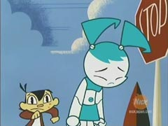
(´･ω･`) ｼｮﾎﾞｰﾝ
でもかわいい！！
04b 「UFOの無免許運転の巻（Unlicensed Flying Object）」
原題を訳すと「無免許飛行物体」。空飛ぶ円盤として知られるUFOはUnidentified Flying Object（未確認飛行物体）の略。だから日本語題は珍しく、内容からの意訳題ではなく、原題を考慮したものになってますね。・・・というか、「原題はこういう風にひっかけてますよ」解説みたいな題だな。逆に変な感じ。
この回はブラッド大暴走のうえ、ジェニーさんの変形もおもしろくて楽しい。
他でも語られているけど、Wikipedia-MLaaTRの項によるとティーン☆ロボットの設定年代は2072年だそうだ。近未来！
2072年になんか意味とかあるのかなあ？ちょっと思い出すのは、「プラテネス」も同じ2072年という設定だったけど関係ないだろうね。SF的になんか意味ある年なのかと調べてみたが、それっぽいものはなかった。SF好きの人ならピンときたりするのかなあ・・・
それはともかく、ティーン☆ロボットの場合、「カートゥーンだからロボットがいようが、なんでもあり」ではなく、「ロボットがいてもいい世界での話」ということになってるようだ。今回の話で「スカイウェイパトロール」という未来的警察が出てきたりするのもそうだし、ジェニーがロボットであっても、みんな「へえ」とは思っても特別ビックリするわけでもないものそのためだろう。実際ジェニー以外にもロボットはいるみたいだし、これから放送する話では「世界ロボットコンベンション」なるイベントで、いろんなロボットが集まるようだし。
ジェニーが空を飛ぶのは描写からみても「反重力装置」のためとみても間違いないでしょうな。ジェットだしてなくても浮いてるし。髪や足のジェットは推進用、一話に出てきた飛行羽根は長距離用ってことかな？
しかし、ウェイクマン博士がなぜに女の子のしかもティーンエイジャーという設定のロボットを作ろうと思ったのかは謎のままだ。世界を守るためのスーパーロボットというのなら、男型でもよさそうなものだが。もしかして男嫌い？そんなそぶりはなさそうなんだが・・・
はっ！そーいやウェイクマン博士ってMrs.らしいので・・・もしやアトムのように事故で亡くなった娘の代わりにロボットを！！・・・とか、そんな話とか今後あったりするのだろうか。
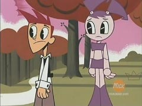
今回の描き忘れ。
へそ！へそ、どっかに忘れてきてるよ！
ねこみそさんとこのジンクス絵で見かけたスレイドさん待ち受けがステキだったので作ってみた。
（130×160px）
スレイドさんって本当はもっとオレンジ色っぽいんだろうけど、アニメだといつも暗いとこにいるので、ダークカラーの印象しかありません。
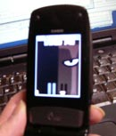＜ろ～～び～～ん。私のものになれ～～。
なぜかうっとりする自分。ケータイH.I.V.E仕様。
今日はこんなスレイドさんを携えて、小田急新百合ヶ丘エルミロードまで行って来ました。
ガールズの握手会があるっていうんだもの。今日はあんまり寒くなかったので助かりました。（えっ、やっぱ寒かったの？）
単純に握手して帰ってきただけなので、特に書くことないよ・・・・
しかしですよ、言葉にすればそれだけですが、私にとっては「夢」だったのですよ！
夢は思い続ければ叶うもの！そして実行するもののみにあたえられる宝！
ついにガールズと結ばれた・・・（ ´Д⊂ ううう。
たとえそれが誰にも共感されなくとも、オリにとってはかけがいのない記念なのさ。ありがとうLOUさん、間に合うようにBBSで教えてくれて・・・・
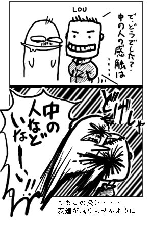
その後、ちょっと買い物に原宿キディランドに寄ったのですが、
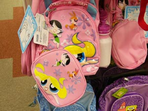
げええええ！PpG Dream in styleの商品が入荷してる！！
さすがに子供向けリュックなので買えなかったけど、あのポーチだけでも別売してくんないかなあ。
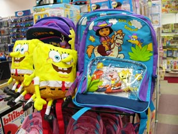
ドーラまであった。
雪じゃなくて雪まじりのアメでした。
よかった・・・。よく考えたら、今日のジェニーはウィンタースペシャルの日も大雪で後半見れなかった回だったので、撮りのがすわけにはいかんかったのでした。それにしても「タック砦」がある回って雪を誘うのでしょうか？でも、この回の雪の表現ってかわいいよなあ。
なので、感想は書かなかったと思うので、書いておく。
ジェニーはティーン☆ロボット
「あたしのボーイフレンド？の巻（Attack of the 5 1/2 Ft. Geek）」
シェルドン登場。これを見てる層の共感をよびやすいのか、海外でも人気のシェルドン。
人声人語さんでも書いてあったが、私もシェルドンはナード（nerd）という印象だったのだが、タイトルからしてギーク（GeeK）扱いのようですね。
ナードは内向的で貧弱なオタク青年（イメージとしてはウディ・アレン）というイメージで、ギークはもっとオタク度というかマニア度が進んだ社会不適合者的イメージ（エルティングヴィルクラブのやつらみたいな）だったのですが、どうも知らない間にニュアンスが変わったようだ。
推測だが、最近GeeKな映画監督やら作家やらが成功をおさめ、マニア度の強い人間たちが受諾側から創作側へうつってきたことが影響しているのではないだろうか。日本でも、「好奇心が強く知識が豊富で感性が豊か」などわけのわからん意味で「オタク」が使われている場合があるので、それに近い現象なのかもしれない。
ではナードはというと、日本でいうとこの「キモヲタ」とか「厨房」とかそんなニュアンスなのかなあ？
発音からしても、GeeKのほうがイガイガしいが、自己主張が強そうな感じ。nerdはぬっとりとしてジメジメしてそうだ。GeeK関連では「A
Girl's Guide to Geek Guys（おたく男は乙女におすすめ）」が面白かった。スタートレックのとこガンダムに入れ替えれば日本でも通用しそうな内容(笑)
それにつけても、（ロボットとはいえ）女の子のロッカーに隠れ潜むジェルドンはやばいやつかもしれない(笑)
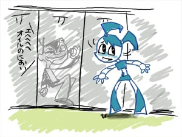
うわ、全然内容と関係ないこと書いてる！
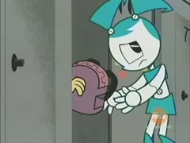
本日の塗り忘れ。白ヘソジェニー。
「タック砦を取り返せの巻（Doom with a View）」
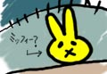タックの帽子のうさちゃんがかわいい。
どうもジェニーはつねにロボット側なのか人間側なのか問われるようだ。今回はとりあえず人間側だったが、これから先に公開される13話ではついに人間に反逆をおこす。カートゥーンだからそう深刻にはならんのだけど、これからもこういうテーマはけっこう出てくるんだろうな。
それにジェニーはどうも「人間になりたい」とは思っていない感じで、どっちかっていうと「人間のティーンエイジャーの仲間になりたい」という感じだ。
クラスターが自分の星について語るところ、原語では最後に「ドモアリガット、ミスターロボット」と言っている。スティクス(STYX)の「ミスターロボット(MR.ROBOTO)」という曲から。＞■
昔流行ったんだよねえ。さすがに日本語版では世代的に知らない人が多そうなので全然違う訳になっていたが。こういう細かい小ネタをあちこちにちりばめてるので油断できん。ピアスの回もどうもダンボのパロディらしいし。
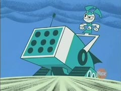
ジェニーさん、ロボットとはいえ大股びらきとは大胆すぎます。マンディとおなじく「はいてない派」ですか・・・＜あたりまえだ
今回雪玉攻撃をくらったジェニーさんですが、君もジェニーに雪玉をぶっかけよう！！
My
Life As a Teenage Robot Hangman
ジェニーのゲームです。問題間違えるたびにジェニーに雪玉がぶっかけられます。だから間違えちゃダメだって(笑)でも、あえて間違えるわたくし。
ティーン☆ロボットの次はチョークゾーンなので、そのまま見る。
チョークゾーンが偶然悪い奴に見つかってしまい、たいへんだ！ってお話。チョークゾーンをテーマパークにして大金持ちに、わはははは。と、妙に生臭い話。
スナップはチョークゾーン側、ペニーは現実世界側という風にパートナーが別れているが、3人そろった時の方がおもしろいんだけどな。スナップとペニーがそれぞれやきもちしてルディを取り合う話とか大好きです。
それにしても、スナップの歩き方っていいなあ。
まだまだ先だな。1巻から3巻の話になるのか。モーターボール編好きなんでチョット残念。
実際に完成するかどうかはわからんけど、ジョニーブラボーの実写とか、サムライジャックの実写とかドラゴンボールの実写とかより完成する確立は高いのは間違いないだろう。
FUNimationというと、日本のアニメを出してる会社ってことらしいけど、自分にとっては新ミュータントニンジャタートルズのDVDを出してる会社というイメージ。ついでに言えばやっぱり日本アニメばかり出している「Media
Blasters」という会社も、自分には「インベーダジムのDVDを出している」いう会社という認識。
どーも偏ってていかんね。
明日は大雪だそうですね。年末スペシャルでティーン☆ロボット見といてよかった・・
Mac mini を一目見て「欲しい！」と注文に走ったのだが、「初期ロットはちょっとまて」という心の声に従い、なんとかこらえた。でもいつか絶対買っちゃうな。サブマシンにはぴったりとかいいつつメインにしちゃうんだろうな・・・ちっちゃいもの好きだから。
その反動で W.I.C.T.H.の米国版と日本版注文しちゃった・・・
さらに、The
MLAATR Sketchbookもご注文です。だって110点以上のオリジナルスケッチ絵が載ってるとか言ってるんですよ。あとカレンダーも。チョークゾーンのやつもついでに頼んでおけばよかったかなぁ・・・ペニーがかわいいのよ。
どうも自分は立体物より印刷物、大きいものより小さいもの弱いようです。ポスターとかは悩むのに、本とかすぐ買う。
CS入ってから、地上波見る率が激しく低くなっているんですが、NHKの冬将軍がすごいぜ！と友人に教えられた。とりあえず、ここのblogとか見なさいとか言われて教えてもらったM's
Blog
冬将軍様すてきすぎる。静止画だけで笑い死にそうになった。明日は雪でCSやばそうだから、久々に地上波ゆっくり見るかな。
ティーンタイタンズが小中学生にウケる秘密とはっ！！！！
めんどくさくなったのでやめました。
それに、ヒットしたあとでの考察とかって、どうも後付の理由みたいだし、あんま面白くないものなあ。また気が向いたら考えてみます。
それよか、ε＝≡(*'-') や開店休業研究所・ブログ研 でも本格的にティーン☆ロボットの感想とか始まったようで、楽しい。短い感想とかって特に、人によってどのポイントに目がいってるのかよくわかっておもろいです。
開店休業研究所・ブログ研 は「Dream in Style」の擬人化絵とかアップしてたりしてて、前から覗いていたんだけど、その後、管理人のだいすけさんとはmixi友達になってから特に親しくさせていただいてました。
そのだいすけさんがコミケに知り合いのところに顔を出す、という話を聞いて、せっかくだからとお会いしたのでした。つうわけで、おもいだし過去日記となるが、こういうのもまあいいだろう。
そう、それは去年の12月30日。
間際に連絡をとったので、お互い顔も知らないし、待ち合わせの取り決めなんかもしてなかったのですが、ケータイで連絡とりあいながらならなんとなるだろうと思っていた。
ところがコミケというのは何万人が集まってるくせに、みんなケータイも使いまくるものだから・・・
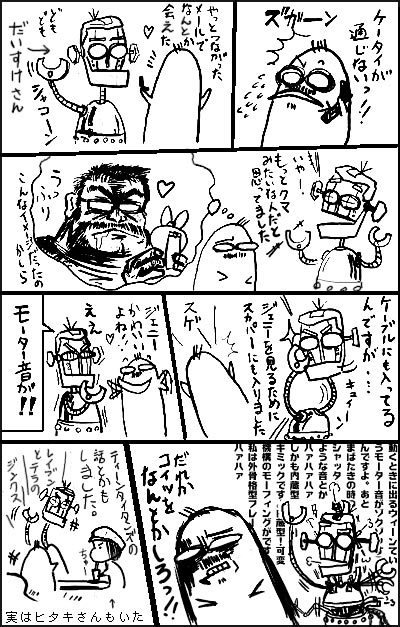
ほんとはとても常識ある紳士な方です。＜フォローになりますように
これまたトゥーン日誌@サンタクルズで知ったのだが（massangeanaさんにはほんとお世話になります）PUFFY英文記事翻訳サイトがえらいことになってた。
サイト名からしてわかるように、ここはカートゥーンサイトではなく、そのまんまPuffyの海外での記事を翻訳して紹介するサイトだ。まあ、最近blog化してからときおりpuffyの情報も扱いながらもあれこれ語るというものに変わったのですが・・・・
そこにある「ティーンタイタンズ」というエントリ。ティーンタイタンズの主題歌をパフィーが歌うことになったとかそういう話題。いまさら？そういまさら。それもそのはず、日付をよく見ていただきたいのだが、「2003年07月02日」のエントリである。かなり前のエントリ。でも、このエントリが今ホット！
なんでこうなっちゃったんだ？と思い、ちゃんと全部読んでみる。
推測だが、どうも、このエントリが PUFFY英文記事翻訳サイトのエントリの一つではなく、ティーンタイタンズという名の単独掲示板サイトのように思われているのではないかということだ。いや絶対そう。
ティーンタイタンズが放送開始してから、検索エンジンから「ティーンタイタンズ」での検索して訪れることが異常に多かった（さすがに今は少し沈静化したけど）。これはうちだけでなく、どうも他でもそうだったようで、わずかにティーンタイタンズを言及しただけのとこでも、ガンガンアクセスがあったようで、それにとまどっていたとこも見たことがある。
パワーパフガールズのファンサイトのようになんとなく棲み分けができているようなものと違い、とにかく爆発的に人気が出た（と言っても過言ではないと思う）ので、適度な（それぞれの層に合った）専門サイトがなく、とにかく語れる場所がほしくて、殺到した現象とも思える。
まあ、それはさておき。
私が興味をもっているのは、もちろんティーンタイタンズにハマった層は広いのだが、特に小・中学生にも絶大な人気をほこっているというのは何故だろう？ということ。しかも、ガンガン検索をかけて知りたくて知りたくてしょうがない、語りたくて語りたくてしょうがないという、強い自発的行動までとらせるほどの人気っぷりの要因だ。
しばらくパワパフ・カートゥーン系のサイトをやってきたがここまでの現象は初めてだった。KNDも人気だったが、それ以上だ（とりあえず自分のところのアクセス解析で判断すれば、ティーンタイタンズは圧倒的）。
その勢いは、インターネットで情報検索だけにとどまらないようで、それはThe Comixのこのページを見てもわかる。＞アメコミ単行本リスト
アニメのコミカライズ版「TeenTitans Go! vol.2」のとこ。
「2004年10月15日発売→完売→2004年12月10日追加入荷予定」
となっている。当然いつかは完売はするだろうけど、こういう表記が出た場合（PpG＃50でもそうだったが）ものすごい勢いで売れたことが推測できる。そして多分11月末あたりから。再入荷をかけたあたりもそれを裏付ける。おそらく問い合わせも多かったんだと思う。子供が欲しがっていたので、買いに行ったというお母さんの話とかも聞いたことがある。
ここまで熱くさせる理由はなんなのか！？
とか考えようと思っていたんだけど、今日は掲示板やメールがいっぱいあって返事書いてたら時間がなくなった(笑)
大手出版社が気合いをいれてアメコミ翻訳を出そうとしてやっきになってる（？）反面、こういう意図しない形で読者層がひろまってゆくのも面白いように思える。定着するかは別として。いままでアメコミとか手に取ることすらなかった人たちが、一回でも見る機会ができたは、これはこれでよいことかもしれない。しかも、従来的アメコミイメージのものとは違ったタイプから入るというのは、これから少しイメージの変化などがおこったりするのだろうか？なんてことも考える。小さい波かもしれないけどね。
ちょっとカタくなったので、BBSでもちょっとふれたTMNT漫画とか載せてみる。
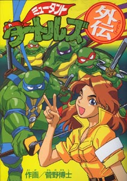
中身はこんな感じ。
なんとDCから発行ですよ！！！！
・・・ごめん。 DCはDCでも、メディアワークスのDengeki Comics。カワバンガー！
トゥーン日誌@サンタクルズで「ジェニーはティーン☆ロボット」について言及されているサイトの紹介エントリがあった。＞ジェニーはティーン☆ロボット
ここんとこ忙しくて決まった場所しか回っていなく、あんまり検索の枠をひろげてなかったので、だいすけさんとこの「開店休業研究所・ブログ研」くらいしか知らなかっのですが、けっこうあったんですねえ。
それぞれ楽しく覗かせていただいた。ああ、もっと早くから知っていればなあ。
特に「gasp!」は、ジェニー感想以外にもなかなか面白く、パワーパフガールズも扱っていたので、読みふけってしまった。
「PpGについての憶測・・・というか希望
」やっぱり私も、今度映画やるとしたら『Deja View』をやって欲しい！！説明的な話なんてもういい、ずばーっと爽快に大暴れしてほしい。バーサークのリボンははためくとこ見たいよ！
などと、ふんふんと感心しながら読んでいくと・・・
フランキー
というエントリがあるんですが、驚いた。フランキーがパワパフのシャツを着ている！そうか、これが前にメールで情報いただいたやつのカットなのですな。どうもこの話はKNDのDVDにおまけでついてくる『Foster's
Home For Imagenary Friends』で見れるらしい。買うか・・・ぼそっ。
それはともかく、FHfIFはとても楽しみ。今年くらいに日本に来そうな感じしてるんだけどなあ。
あと、人声人語ではティーンエイジロボットの声優情報があった。
ジェニー（佐々木亜紀）タック（青山桐子）ブラッド（松本孝平）とのことだが、ソース元はガイド誌ってことでスカパーのガイド誌2冊を目を皿のようにして探してみたが、発見できなかった。BSとセットになってるCSガイド誌というのもあったので、そちらも見てみたが、そちらではニコロデオンというチャンネルそのものが存在していない扱いであった。やはりマイナーなんですね・・・・ニック。
ん～～～、てことはスカパーではなくケーブルのガイド誌なのだろうか。ケーブル局でニックも放送しているとこといえば・・・どこ？？？限りなく確認がとれそうもないので、今のトコは（仮）ということにしとこう。
ジエニー役と噂される「佐々木 亜紀」さんには履歴ページがあるので、そのうち更新されることを待とう。
（つーか、日本ニコロデオン様スタッフ・キャスト情報公開してよ。）
で、これに「エーエス企画の最新出演情報
」と最近のBBSでの吉田かずのりさんからの聞き取り推測を合わせると、こうなった。
| ジェニー（XJ9) | 佐々木亜紀 |
| タック（タッカー・カーバンクル／Tucker Carbunkle） | 青山桐子 |
| ブラッド（ブラッドリー・カーバンクル／Bradley Carbunkle） | 松本孝平 |
| ウェイクマン博士（ノーラ・ウェイクマン／Nora Wakeman） | |
| ブリット（ブリタニー・クラスト／Brittany Crust） | |
| ティフ（ティファニー・クラスト／Tiffany Crust） | 雨蘭咲木子 |
| シェルドン（シェルドン・リー／Sheldon Lee） | 深津智義 |
| XJ8 監督ほか | 青木強 |
| テレサ（Teresa） | 川瀬ゆう子 |
| ベクサス・皮膚スーツ（Vexus・Raggedy Android Suit） | 清水千恵 |
| XJ4 | まるおみか |
| メズマー（Mezmer） | 如月省吾 |
| ジャン（Jean） | 飯田征利 |
| 不確定情報 | 推測 |
ん～と、こんなとこか。ティフの雨蘭咲木子はこの声優のバランスを見るとちょっと格上すぎて違うかもしれない。
とりあえず、XJ8やXJ4などのロボット達（ジェニーの試作品？）はまだ出てないし、宿敵（？）ベクサスも未登場なのですが、テレサはこの娘さん
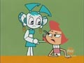
メズマーはロボット嫌いのこのおっさん。
ブリットとティフはいとこ同士のようです。
ところで、tv home のMLaaTRのフォーラムに「MLaaTRが日本ではじまるってさ！！」っていうトピックができていた。やっぱり「Speak No Evil（邦題：あれ？通じな～い？の巻）をどうやってやるんだろう？」って疑問におもっているようだ。・・・・だれか教えてやって・・・私にはムリです。
The Teenage Roblog ではbleedmanさんのファンコミックが紹介されていた。bleedmanさんってけっこうあちこちで有名になってるのかもしれない。気が付いたら本気でコミックデビューとかしてたりするんじゃないだろうか。でも私はもうひとつ平行して描いている「Grim tales」のほうが気になって気になって・・・・だってスポーンまでご登場ですよ。
TitansGo.netのお絵かき掲示板、バニーレイブンが放送されたせいか、バニーなレイブンだらけになってた。
W.I.T.C.H.ですが、ディズニーJETIXのサイトでミニクリップが見れるようになってた。＞■
（どうもQTの設定がヘボいようで、全ダウンロードしてからでないと見れない様子。しばらく待ってると動き出します）
ええええええええええええええ。なにこれ～～。違う、違うぞ。こんなW.I.T.C.H.いやだあ。
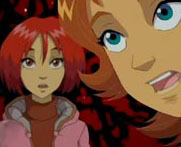これがウィルとイルマ？？
しかもこれがコーネリア？？？
いやだっ！ この絵はイヤだっ！
コミック版のほうが繊細で、味があって、ずっといいよ。
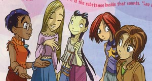
コミック版のメンバー。左から、タラニー、コーネリア、ハイ・リン、ウィル、イルマ。
特にイルマはけっこうお気に入りだったんですよ。
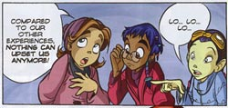
こう、やや太めだけどいい感じに味があって。
コーネリアだって、コミック版だともっとおしとやかな感じで
ずっとスレンダー。あれじゃ、あほあほキンパツ娘ではないですか。い や だ ー。
こんなんだったらキムポのほうがいいよ～～。
とりあえず、本放送はまだってことらしいから、今のは試作のパイロット版ということで、お願い！
いやーしかし、いよいよカートゥーンでも本格的に少女向けが動き出してきましたねぇ。作品として面白いかは別として、今後どんなものが出てくるのか楽しみです。次はニックの番かな？
いや、ジンジャーの青春日記がありますから、とか言わないでね(笑)
TitansGo.netのお絵かき掲示板を覗いたらジェニージンクスが投稿されてた。＞[
119 ]
Nitroさんとは趣味あいそうです。
昨日は仕事途中だってのに、うっかり絵チャとかはじめちゃってエライことに。チャット系はあっというまに時間が吸い取られるので怖いです。
日本の漫画業界では新古書店の進出で売れなくなってタイヘンダー！とか言われてますが（私は理由はそんなとこにはないと思ってますが）、海外のコミック業界のほうがもっと苦労してるよなあ・・なんて思います。
トランスフォーマーとかニンジャタートルズとかのコミックを出版していたドリームウェーブが廃業だそうです。なんかサイトも無くなってるっぽいので、詳しくはこちらの掲示板をご覧下さい。
去年は「トッド・マクファーレン・プロダクション」が倒産、クロスジェンコミックスも大借金をかかえてディズニーに買収されたりと、いろいろと大変です。SLGも大丈夫かしらん。
それにしても、やっぱディズニーはデカイよなあ。リンク先の「ディズニーは、世界中のコミックブック出版社の約半分を所有しています」というコメントに驚き。映画、TV、出版あんどテーマパークやグッズ販売と一社でまとめてかかえてるのはそうないし、さすが世界のメディア王。ディズニー本は数あれど、ディズニーの出版部門について語ってるものは皆無なので、このあたりの状況をもっと知りたいところ。
最近アメリカでもアニメの放送が始まったというW.I.T.C.H.。（でも、放送スケジュールがキムと入れ替えっぽいようなので、キムファンとしては微妙）コミックも人気のようですね。
かなり少女漫画っぽい雰囲気の W.I.T.C.H.ですが、日本アマゾンからも購入できるみたいですね。リーフと同じ雑誌形式のコミックブックというのにアマゾンで取り扱ってるというのは、さすがディズニーといったところでしょうか。とは言っても、DCとかのコミックブック形式とは違って、交流ページ付き書き下ろし単行本みたいなタイプなんで、また流通が違うのかもしれません。
人気あるのか、キャラ単体のスピンオフ本「W.I.T.C.H.
Adventures」というのも刊行されているみたいです。
通常のアメコミ市場から離れて動いているようなディズニーなので、油断してるとW.I.T.C.H.の日本語版コミックスとか、いつのまにか店頭で見かけることとかあったりするのかなあ。いや、なんかマジでありそう。
「ちっちゃくったって硬いぞ！」
「おっと、それは私のセイブアムスだった。HA-HAHAHAHA」
などと下品なアメリカンジョークをかましたとこで、今日から『ジェニーはティーン☆ロボット』本放送ですね。一日一回というのはちょっとつらいけど、土日というとこがまだ救いか。
ジェニーの番宣CMも見れて幸せ。
当初、あまりにおてんばな日本語吹き替えを聞いたときは、ちょっととまどったが、慣れるとけっこうクセになるなこれ。コミカルさが30％ほど増してる感じでわるくないです。アドリブ・・・じゃないと思うけど、いろいろアレンジが効いていておもろい。どのくらいアレンジがおてんばかというと・・・例えば、「パーティ大好き！の巻（Party Machine）」の回を比べてみるとよくわかる。
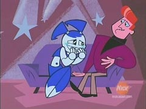あこがれのドン・プリマ様とのツーショット。
うかれて笑いだすジェニーだが、原語だと「エヘヘヘアハハハ」とこんな感じ。
ところが、日本語吹き替えだと・・・
「イヒヒヒヒ、アヘアヘアヘ、ブヒィ」
アレンジにもほどがあるっ！！こんなヒロインがいるかっ！(笑)
てなかんじで、なかなかはっちゃけていて楽しい。いや、けっこう気に入ってるのよ。原語のカワエさんも好きだけど、こっちもなかなか。放送は遅れるけど、両方楽しめる日本っていいなあ。
◇
NHKの「英語しゃべらナイト」（再放送）を見た。
いや～パフィって英語下手ですなぁ(笑) やっぱ、そもそもそんな上手な英語なんか期待してないんだろう。むしろ、カタコトの日本語訛りの英語のほうが、アメリカ人からみれば「カワイク」聞こえるのかもしれないし、面白いのだろう。カタコトに日本語を喋る外人の女の子がカワイク聞こえるように。
番組内容もいろいろと興味深かった。メガネ・カメラ・ハイテクみたいな日本人イメージ像から、すいぶん変化してきているようにも思える。やっぱ今は、カワイイ・アニメ・ゲームあんどケータイ。
特に今の日本は「カワイイ女の子」というイメージがけっこうあるんでないの？なんて思う。
KNDでも日本人は「カワイイ」「女の子」のナンバー3だし。
そうなると思い起こすのがXiaolin Showdown（シャオリン・ショーダウン）というカートゥーン。
こちらも日本人の女の子「キミコ・トホ」ちゃんが登場する。
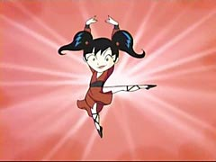
バトルモードはこんな黒髪ツインテールな感じだが、普段着状態だと・・・
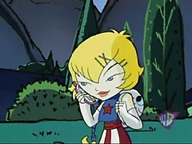
ケータイ！カワイイ系のリュック！しかも金髪！
と、古典的な日本人女性というより、イマドキのギャルっぽい感じ。これが今の日本人像なのですよ！どぎゃーん。そのうえケータイやPDAを使いこなし、オシャレという属性も。
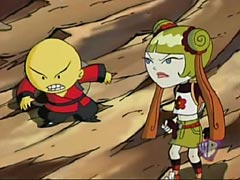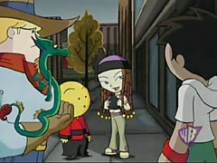
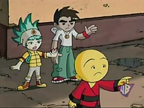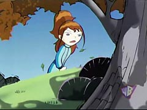
野郎どもはいつも同じ服なのに、キミコちゃんは毎回ファッションどころか髪型や髪の色まで違う。ステキー！かわいいー！おしゃれー！
声はGrey Delisleさん。マンディやガストリーの人。Hi Hi PuffyではYUMI役。キミコで日本人役をやったからYUMI役をゲットしたのかな？
ちなみに、主人公は黄色いクリリンみたいなやつです。オミくん。驚くべきことに声はTara Strong（バブルス・レイヴン）。全然わからんわ。いつもながらこの人の芸幅の広さにはまいる。
おまけ：少林寺（Xiaolin）軍団 VS 悪役のみなさま。にゃ～～ん。
急ぎ仕事なのに返事待ち。なので時間はあるのに自由にやりたいことも外出もできない軟禁状態って、つらいなあ。待機とかいってじっと待ってても全然連絡こないから、もうネットとかしちゃうぞ。
ティーン☆ロボットのエピリストをちょっぴり修正。おかしいなあ。ガイド誌には「あこがれのイヤリング」って書いてあったのに、見直してみたら「ピアス」って言ってた。おいおい。
そんなわけで、今日からジェニーも本放送。スペシャルで見ちゃった人は、今度はぜひ英語でどうぞ。
「あれ？通じな～い？」を英語で聞くのは必見だけど、「タック砦を取り返せ」もぜひ英語で。クラスターがロボット星の説明をするとことかね。30代の人は必見ですよ。ドモアリガト、ミスターロボット。
お助けキッズ・セイブアムスってなんかバクテリアみたくてキモくないですか？と、とある方に言われてから、もうそういうふうにしか見れなくなってしまってます。とくにヌードルがねえ・・・・ジャージーはツインテールでカワイイのだが。チビすけどもはカビの塊にしか見えない。
そんなセイブアムス、今日見たらこんなやつが出ていた。
最初は正面だったので、まるっこくてカワイイ感じもしてたのだが、全体が表示されると・・なんかヒルだかナメクジみたいでキモいよ～～。
しかもネバネバしてるらしいし・・・
復活は当分先かな・・なんて思ってたひまじんが、今日見たらなんかちょびっと更新してた！
ハカセgood job
年賀状メールとかいただいた方へのお返事がとどこおってます。せっかくだから年賀絵もお返しに・・・とか欲張ってたのが裏目に。あまり待たせても悪いだろうから、「ごめん」と謝って、普通にテキストでお返ししたほうがいいよなあ。
なんつーことを思いながら、気が付けばリージョン1のDVDのほうがはるかに多くなってしまったスカポン太でございます。むしろリージョンフリープレイヤーがいらないくらい。
こういう偏りだらけなのはアメコミの嗜好にもあって、たまに私のことをアメコミに詳しい人なんて勘違いする人も多いのですが、一般的にアメコミっぽいと思われているメインストリーム作品などほとんど読んでいないので、全然知らないのですよ。バットマンですらブルース・ティム作品以外はまったくといっていいほど読んでないし、マーベル系なんか皆無。手元にあるヒーローっぽいもの・・・と言って出てくるのが「The Atomics」だったりするので困ったものです。あとは・・・jetcatとPpGか？だめだこりゃ。
そんなわけで、私が言うアメコミ（そして私が思っているアメコミ）と世間でのアメコミのイメージの差がけっこうあるんですが、それを痛感したのが、こちらの竹熊健太郎のBlogエントリ「「サルまん」米国版で英語の勉強を！」
最近、箱男さんのblogの展開がめっちゃおもしろいので読んでいるわけなんですが、そこからトラックバックされていた竹熊健太郎氏のBlogを読んでみたわけなんです。当のエントリより、そこからのコメントの流れのほうが面白かったのですが、それはさておき。いやいや、本文のほうも興味深かったですよ。
例えば、パフィの名が比較として出ていたとことか。
Hi Hi Puffyが去年末日本のニュースで話題になったこともあって、普通の人からもこの話題を最近よく聞くようになりましたが、カートゥーン系サイトでは1年以上も前から話にのぼっていたんだよね。しかもティーンタイタンズのOPうんぬんとかはそれ以上前から。（だからちょっとばかしいまさら感も・・）
でもって、米国版の印税が安いというのも、アメリカのコミック市場の状態を知っていれば、さほど驚くべき状況でもないように思えたりもして、どこが驚くべきとこなのかに違和感を覚えたのでした。
そう、竹熊氏ですら「普通の人」のように見えてしまったのですよ！！
その後のコメントにも続く「リアルな絵」とか、いろいろ出てるアメコミ的イメージにも違和感。
でも、これは全部私が悪いとです。なんせ、毎月読んでるアメコミがパワーパフガールスですし、レノーアとか、FScとか、ウサギ用心棒とか、ウードリングとか読んでアメコミっておもしれーよなあ、とか言ってる自分が偏りすぎているのですとよ。全然リアル絵じゃねーーーー(笑)
そんなわけで、別にそっちのblogにつっこもうとかいう話じゃなくて、いつのまにか偏ってしまっている自分の感覚に驚いたとか、そういう話。
そーいや、FScさんもアメリカからは「日本の漫画っぽいですね」と言われ、日本のファンからは「やっぱり感覚的に違う」とか言われても、自分の中では自分の描けるもの描きたいものをそのまんまだしているだけなので、どう返答していいのか困るとか言ってたのを思い出しました。・・・話ぜんぜん繋がってませんね。
あと、コミック比較で出てくる、右読み左読みがなぜ問題になるのかも自分では感覚的にはよくわかりません。どっち読みでも違和感ないものなあ。でも気になる人は気になる問題なのかな？
「こっちだってアメコミ読まないんだからお互い様ですかね。」
カートゥーンも同じコト言えるるんじゃないかなあ。なんてことも思った。ANIMEもそう全部が全部ウハウハじゃないし、日本にものすごくたくさんいるだろうコアなアニメファンも、カートゥーンまで積極的に見てる人は少ないでしょうな。
いや、べつにいいんですが。
なんか今日の日記はボヤキっぽいな(笑)
久々のお仕事。
「いや～明日からいきなりドイツに出張なんで、今日中に全部まとめて」しるかそんなの！！
そんな感じで、まるで寝起きにトンカツ喰うような、いきなりの仕事ラッシュに体と頭の切り替えがついていかなくてツライ。
海外からダンボールでなんか届いた！
どぎゃーーーん。
ちょっと遅れたけど、自分お年玉到着！ダンボールいっぱいのDVD! DVD!
アクアティーンの中パッケージ。でたらめすぎ。
入手しただけで満足して放置することが多いので、「見るように、見るように」と何度も自分にいいきかせるのでした。どれもこれも見たいものばかりなんですが、今回特に楽しみにしてたものがこちら。
カメDVD。いつまでたっても日本公開してくんないから、とうとう買っちゃったよ。
しかも、この巻、激しく見たかった。
「BATTLE NEXUS」！ウサギ用心棒、カメアニメに参戦ですよ。
USAGI-san ｷﾀ━━━━━━(ﾟ∀ﾟ)━━━━━━ !!!!
かっちょえーー。レオナルドとのからみも最高。
そのうえ、エキストラトラックにはStan Sakai先生のインタビューまで！うはうは。
さらに、いままで無かったサブタイトル（英語字幕）までつくようになってる。わかる、わかるぞお。カメたちが何言ってるのかわかるぞおぉぉぉぉ。
（ ´Д⊂ 買ってよかった・・・
おかげさまで、カメOPも見ながら熱唱ですよ。ワン、ツー、スリー、フォー！
それにつけても、新ミュータントニンジャタートルズ、こんなに面白いのになんで日本でやらないのか謎です。
ついに4月に「Harvey
Birdman, Attorney at Law」のDVDが出ますよ～～！！
この間の日本CN審議会での文面を読むと、かなり子供向けを意識しているようなので、こういう下品なアダルトスイム作品は日本で放送する可能性は限りなく低いので、もう買うしかありません。俺は買う。絶対買う。間違いなく買う。SGC2Cの＃３も出るようだけど、そっちも気になるなあ。この時期になると、すでにトーク番組としては機能してないくらいの壊れっぷりのはず。笑いどころが微妙すぎて笑えないかもしれないけど、どーせ日本じゃやらないに違いないから、やっぱ買うしかないよなあ。
でも、バードマンはおもろいです。中身のくだらなさに反比例して妙に凝ったDVDパッケージが無駄すぎてたまりません。
あだ～るとすい～む。と言えば、今日はこんなものを入手したのでした。
なんかフチが白トビしちゃったのでわかりにくいかもしれませんが、アダルトスイム・トランプカード！なのですよ。もう無駄にかっちょよくて最高。去年のコミコンで出てたやつなんですが、なんとかやっとわが手元に。大貧民くらいはやっても、スピードは禁止です。
ジェニーが今日でしばらくお預けになるのは寂しいなあ。女の子スーツ再び。新女の子スーツのジェニーもめっちゃカワイかったけど、やっぱロボ娘さんがいいよね！
なにげに人間との対立話が多いような気がするんだけど、こっそり裏テーマみたいなものがあったりするんだろうか。パワーパフガールズは、劇場版を除けば、すっかり受け入れれているけど、ジェニーの場合はどうもそうじゃない。第二シーズンでは急にシリアスになったりは・・・しないよね？
ところで、「The Boy Who Cried Robot」の邦題、何度聞いても「呼ばれてボッカリの巻」に聞こえるんだけど、合ってるのかなぁ・・・？意味的には「呼ばれてばっかり」という気もするんだが、やっぱりボッカリに聞こえる。あ～～もう、ニックはいつもながらマニア泣かせです。声優さんもわからんし。
ティーンエイジロボットは、そのうち簡単なまとめページでも作ってみたいな。
今日もいろいろあったんだけど、日記を書くペースがおいつかないよ。
お正月してます。
ティーン☆ロボット、ジェニーはロボットということもあるんだろうけど、さすがカートゥーン、扱いが酷いですなあ（誉めてます）。特に今日のやつはジェニーいじられまくり。
目玉なくなるやつは、ハッピーツリーフレンズを思い出して、ちょっと怖かったわ(笑)
でも、盲目少女ってことで萌え。（おいおい）
後半のパーティーのやつでもボロボロにされ、そこがまたグッときます。ペイント途中の恥じらいといい、レッドジェニーといい、かわいらしさとハチャメチャぶりがうまくミックスされていて、ほんと見所多いなあ。
ブリットとティフはイジワルキャラなんだけど、ファッションが毎回違ってすんばらしい。こちらのブログにも載ってるけど、これでもかってくらい奇抜かつステキな服でご登場なのですよ。
ティーン☆ロボットは全体的にもセンスが良くていいですねぇ。名も無きその他のキャラたちのデザインもしっかりしていて、この部分はパワパフより好きです。
久々にまったり～と思ったら、年末での忙しさの緊張の糸が切れたのか、疲労の蓄積が一気に来たのか、ぐったりしてます。
今でもこんな感じ。
まあ、そうでなくても、こういう休日って自分だけの時間を作るのは逆に難しいわけで、ゆっくりたまったカートゥーンを見る時間も、PCに触れる時間もないわけで・・・・
とかいいつつ、ティーンエイジロボットはなんとかスキを見てみたのでした～！
うわー、やっぱ楽しいなこの作品。かなりハチャメチャのドタバタ。媚びもないし、まるでパワパフの初期シーズンを見ているような、すっとんきょうぶり。かわいい～ではなく、大笑いして見てます。
パワパフをはじめて見たころのようなワクワク感があってなんだかすごく嬉しい。
日本語吹き替えは、それほどクセのない、いかにもニックらしい感じ。原語のカワエさんがスキだったので、最初は違和感あったけど、日本ジェニーのおてんばぶりにもすっかり慣れていいかんじに。原語で音声がないとこでも、「やっ！」とか「あいたっ！」とか入るとこも、今では笑いのポイントになってます(笑)
印象がかなり変わったのはブレッドとシェルダン。
オタク少年シェルダンは、ナードというより内向的な少年という感じ。みんなにバカにされるジェニーを「ジェニーは美人でカワイイんだ！」と擁護するとこで一気に好きになった。なるほど、海外で人気があるのもうなずける。
ブレッドは、もっと優しい隣のお兄さんみたいなのかと思ってたら、えらいいいかげんなキャラでなかなかいい。 やっぱこれがカートゥーンかなあ。カートゥーンのいいとこをモダンにしたような感じで、この作品はやっぱりすばらしいよ。
背景美術もすばらしくいい。特に私がアール・デコ大好きなので、背景を見てるだけでうっとりです。色彩設計も単純化しているのによく計算されていて、美しいです。背景の状況にあわせてキャラクターの色味が変化するさまには感嘆する。単純にデフォルメしているからわかりにくいかもしれないけど、サムライジャックに匹敵する美術の美しさ。
なので、何度見ても楽しめるので、日本語音声で見たらぜひ英語音声で見ることもオススメする。
原語の声優さんも個性豊かでとても楽しいのです。ジェニー役のカワエさんはほんとかわいいし、ウェイクマン博士（Candi Milo ：デクスターと同じ人）の妙なイントネーションの巻き舌はとても楽しいし、ティフは一度聞いたら忘れないクリー（KNDのナンバー5）さん。
以前から気になっていた[Speak No Evil]（日本題：あれ？通じな～い？の巻）は、ぜひ英語音声で。この回は英語音声のほうが絶対おもしろいです。見ないと損します。日本語放送では、ジェニーが英語しかはなせなくなっちゃった～！とちょうど逆にしてあるけど、原語では日本語しゃべりまくり。
日本語部分どうするのかなぁ？って思っていたのですが、こうしてみてみると「母国語をしゃべれなくなった」というとこにポイントをおけばこれしかないかなあと納得。日本語スタッフの方々ご苦労様でした。
ジェニーのモーター音に萌えているという変わった趣味の方もいるようだけど、普通に見てもコミカルで楽しい作品です。自分メモということで、エピソードリストを作ってみた。＞■
{kind=link}